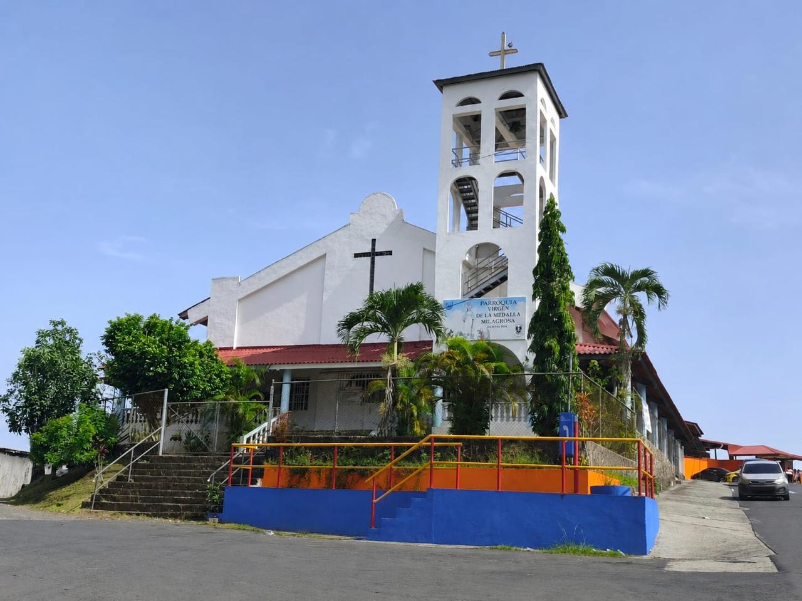
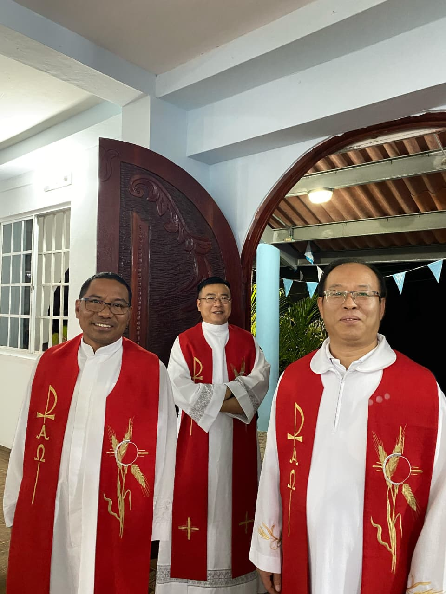

Servicio y Evangelización
Pastorales Parroquiales
Pon tu talento al servicio de Cristo y nuestra comunidad parroquial.

Una familia espiritual de comunión, participación y misión. Junto con nuestras once capillas, caminamos en la fe y el servicio bajo el amparo de María.

77 años de fe y evangelización
Sede Parroquial y 11 Capillas en Alcalde Díaz
Calle Central & Calle Colón, Alcalde Díaz
9:00 a.m. - 5:00 p.m.
3:00 p.m. - 5:00 p.m.
Las Malvinas · Villa Grecia · San Pablo · Quebrada Ancha
Ciudad Bolívar · Milenio · Mocambo
Ciudad El Amanecer · La Esperanza · Villa Nueva · El Tecal
Selecciona cada sacramento para conocer su significado espiritual y la documentación requerida para su inscripción.
El sacramento es el inicio y el fundamento de toda la vida cristiana. No solo nos libera del pecado original, sino que también nos hace hijos de Dios, partícipes de su misión salvífica e incorporados a la familia de Dios: la Iglesia. Este sacramento se celebra solo una vez en la vida.
La Primera Comunión no es un sacramento en sí mismo; el verdadero sacramento es la Eucaristía, instituida por el Señor Jesús en la Última Cena. Se le llama así porque marca la primera vez que un bautizado recibe a Jesús sacramentado bajo las especies de pan y vino dentro de la Eucaristía, de manera que al comulgar entra en el comulgante Jesucristo vivo con su cuerpo, sangre, alma y divinidad. Requiere una preparación de dos años.
La Confirmación es el sacramento que confirma el bautismo y robustece la gracia bautismal. Su efecto es la efusión especial del Espíritu Santo, como fue concedido a los Apóstoles el día de Pentecostés, por el cual nos une más firmemente a Cristo, nos introduce más profundamente en la filiación divina, aumenta en nosotros los dones del Espíritu Santo y hace más perfecto nuestro vínculo con la Iglesia (cf. LG 11).
La familia cristiana está fundada en el sacramento del Matrimonio entre un varón y una mujer, signo del amor de Dios por la humanidad y de la entrega de Cristo por su esposa, la Iglesia. Casarse por la Iglesia hace de la familia una iglesia doméstica en la que se vive el culto del amor, el compartir mutuo y la oración, en una alianza permanente y fiel.
Pon tu talento al servicio de Cristo y nuestra comunidad parroquial.
Cargando información actualizada de la parroquia...
Únete a nuestras transmisiones oficiales en MedallaTV por YouTube y comparte la Eucaristía desde cualquier lugar.
Accede directamente a la pestaña de transmisiones en vivo de nuestro canal oficial @medallatv2528 para ver las misas y celebraciones en tiempo real sin errores de reproducción incrustada.